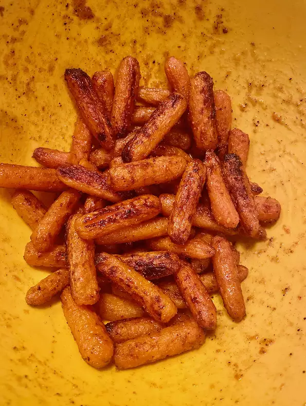

Air Fryer Sweet and Spicy Roasted Carrots

Description
These tender and roasted carrots cooked in the air fryer can be on
your table in less than half an hour. Tossed in a honey-butter sauce
and sprinkled with your choice of fresh basil, chives, or just salt
and pepper.
Ingredients
- 1 serving cooking spray
- 1 tablespoon butter, melted
- 1 tablespoon hot honey (such as Mike's Hot Honey®)
- 1 teaspoon grated orange zest
- ½ teaspoon ground cardamom
- ½ pound baby carrots
- 1 tablespoon freshly squeezed orange juice
- 1 pinch salt and ground black pepper to taste
Directions
- Preheat an air fryer to 400 degrees F (200 degrees C). Spray the basket
with nonstick cooking spray.
- d simmer for 5 minutes.
- Mix together cottage cheese, 2 cups of mozzarella cheese, eggs, 1/2 of the
grated Parmesan cheese, dried parsley, salt, and pepper in a large bowl.
- Spread 3/4 cup of sauce in a 9x13-inch baking dish. Cover with 3 uncooked
lasagna noodles, 1 3/4 cups of cheese mixture, and 1/4 cup sauce; repeat
layers once more. Top with remaining 3 noodles, sauce, mozzarella, and
Parmesan cheese. Add 1/2 cup water along the edges of the dish. Cover tightly
with aluminum foil.
- Air fry until carrots are roasted and fork tender, tossing every 7 minutes,
for 15 to 22 minutes. Mix orange juice with reserved honey-butter sauce.
Toss with carrots until well combined. Season with salt and pepper.